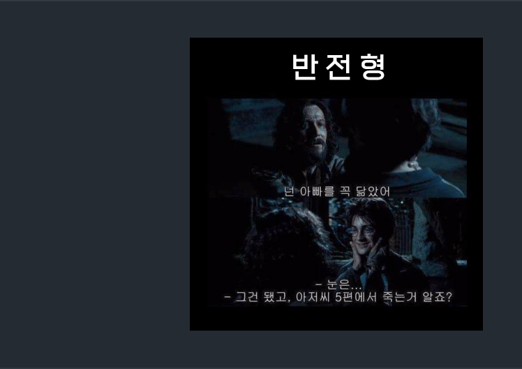
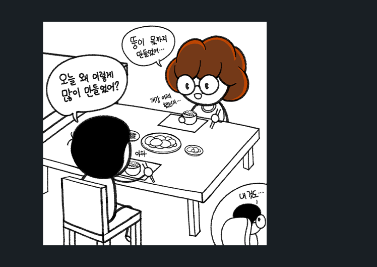

마치 우리 집만 같은 포근함과 구수함이 당신을 기다리고 있습니다.
시 선
유아 유해매체물로서 정보통신망 이용촉진 및 정보보호 등에 과한 법률 및 청소년 보호법의 규정에 의하여
12개월 미만의 유아는 이 영상매체물을 시청할 수 없습니다.
-

Comedy -

Horror -

Thriller
간단하게 설명을 해드리겠습니다.
마치 우리 집만 같은 포근함과 구수함이 당신을 기다리고 있습니다.
너무나도 소름이 끼쳐서 계속해서 뒤에 누군가가 있는거 같습니다!

한번 보고난다면 계속 집에 갈 때에도 생각이 납니다!!
우리는 그 중에서도 흥행을 위해서 유명한 사람들이 말한 것들만 적었습니다.

다음 후속작은 이 영화를 위해 만들겠다! "

내가 지금까지 만들었던 영화들이 부끄러워서 다 폭발시켜버리고 싶다! "
★☆☆☆☆

이제 이 생에 여한이 없다! "

왜 계속해서 보게 되는걸까? "
★★★★☆

★★★★★